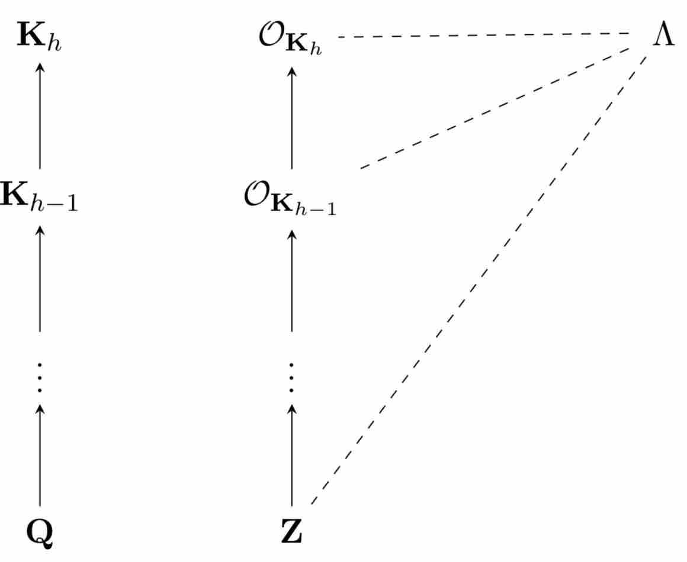
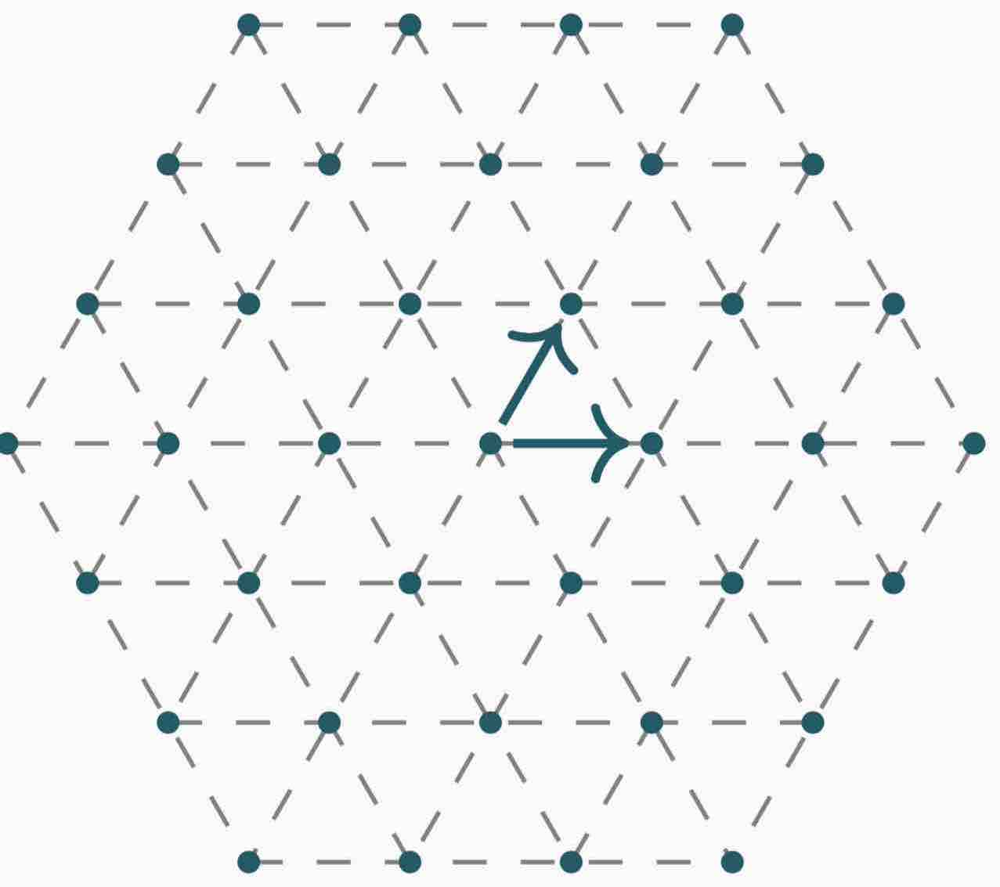

Fast(er) lattice reduction algorithms
Joint work with Paul Kirchner and Pierre-Alain Fouque
This page archives the prototypes of lattice reduction algorithms desccribed in the paper Algebraic and euclidean lattices: optimal lattice reduction and beyond. The two proof of concepts are on the one hand a blazing fast reduction algorithm for algebraic lattices over cyclotomic fields and on the other hand a quasi-optimal reduction for Euclidean lattices.
Reduction of algebraic lattices over cyclotomic fields
 We introduce a framework generalizing lattice reduction algorithms to module lattices in order to practically and efficiently solve the \(\gamma\)-Hermite Module-SVP problem over arbitrary cyclotomic fields. The core idea is to exploit the structure of the subfields for designing a recursive strategy of reduction in the tower of fields we are working in. Besides, we demonstrate how to leverage the inherent symplectic geometry existing such fields to provide a significant speed-up of the reduction for rank two modules. As a byproduct, we also generalize to all cyclotomic fields and provide speedups for many previous number theoretical algorithms, in particular to the rounding in the so-called Log-unit lattice. Quantitatively, we show that a module of rank 2 over a cyclotomic field of degree $n$ can be heuristically reduced within approximation factor \(2^{\tilde{\textrm{O}}(n)}\) in time \(\tilde{\textrm{O}}(n^2B)\), where \(B\) is the bitlength of the entries. For \(B\) large enough, this complexity shrinks to \(\tilde{\textrm{O}}(n^{\log_2 3}B)\). This last result is particularly striking as it goes below the estimate of \(n^2B\) swaps given by the classical analysis of the LLL algorithm using the decrease of the potential.
Features
- Fully Parallel
- Fastest available reduction for Cyclotomic lattices
- Requires latest version of GP.
- Generator of NTRU instances included in the file
Content
-- File reduction.gp reduces a NTRU-like lattice,
produced in the main function, at the bottom of the file
(procedure exec()). It showcases the main reduction and
the symplectic symmetries exploitation.
-- ideaux.gp is a fast implementation of the Gentry-Szydlo algorithm.
Quasi-optimal reduction for Euclidean lattices
 The LLL algorithm introduced by Lenstra, Lenstra and Lovàsz in 1982 is a polynomial-time algorithm for reducing \(d\)-dimensional lattice with exponential \(2^d\) approximation factor. Currently, the most efficient version of the LLL algorithm has a running time in \(d^4\cdot B^{1+\textrm{o}{1}}\) by Neumaier and Stehlé where \(B\) is the bitlength of the entries, but it has never been implemented. The OptLLL algorithm here an heuristic, parallel and superfast versions of LLL and we propose an implementation. First of all, we show that by carefully reducing the needed precision during the recursion steps, we can get a LLL reduction in time \(\tilde{O}(d^\omega\cdot B)\), i.e. almost a constant number of matrix multiplications, where \(\omega\) is the exponent of matrix multiplication. We then show that we can reduce structured lattices, so-called knapsack lattices in time \(\tilde{O}(d^{\omega-1}\cdot B)\), which is useful for finding linear relations between real numbers or finding the minimal polynomial of algebraic numbers.
Features
- Fully Parallel
- Faster than state-of-the-art LLL implementation
- Estimated complexity in \(\tilde{O}(d^\omega\cdot B)\)
- Requires MPFR, GMP and FFTW.
- Please compile the latest OpenBLAS library before installing.
- Compatible with fpLLL input format
Installation
./configure --enable-openmp
CPPFLAGS=-I/opt/OpenBLAS/include LDFLAGS=-L/opt/OpenBLAS/lib
make
## Launch with
src/lllfr